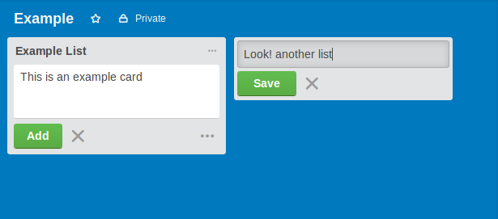
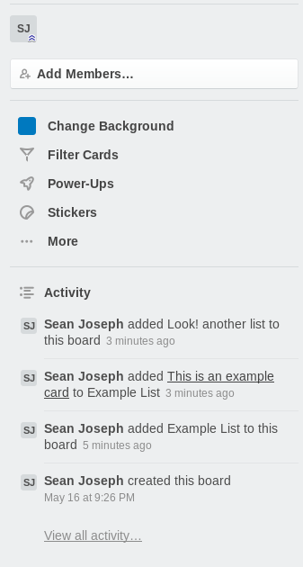
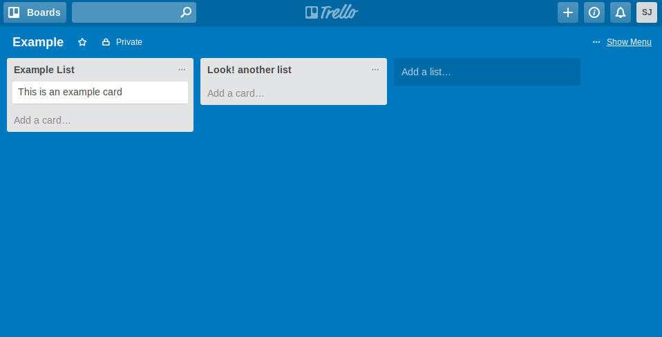
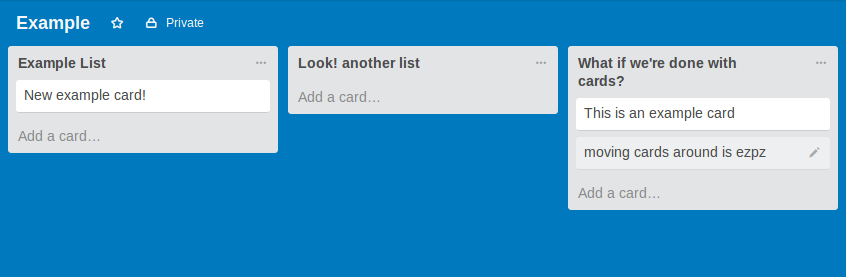
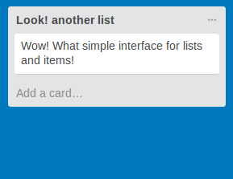

Trello uses a fairly simple interface for lists and cards. Adding a card simply requires you to type the contents of the card into the text dialog box and hit the create button. The process for adding a list is very similar.

Trello provides an clear divide between content and control. The menu interface allows you to make any important changes to the way the board functions while also providing a list of changes made to the board.

Trello's layout provides a very high S/N ratio by allowing you to dismiss controls when they are not needed. This allows users to focus solely on the content in the board.

Trello's board is uniquely flexible and allows for users to be able to utilize it to coordinate group efforts and solo endeavors alike!

Trello's interface is simple and easy to utilize. The UI is fairly light and self explanatory.